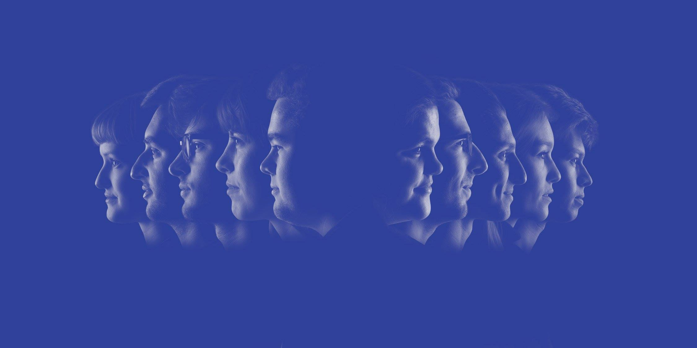

		<div ng-app="myapp">

			<!--List of all students-->
			<div ng-view></div>
			<script type="text/ng-template" id="/list.html">  

				<!-- Header -->
				<header>
					<iframe src="https://player.vimeo.com/video/112384599" class="student-video" frameborder="0" webkitallowfullscreen mozallowfullscreen allowfullscreen></iframe>
				</header>
				<h1 class="title margin">
					<div class="school-year">16 17</div>
					<div class="education">ALUMNI 2016 - 2017<br> GRAFISCHE EN<br>DIGITALE MEDIA</div>
				</h1>
		
				<!-- Container div for search engine -->
				<div id="users">
					<p class="search-helper">Zoek naar studenten door middel van hun naam, afstudeerrichting of tag.</p>

					<!-- Searchfield -->
					<div class="row margin">
						<form class="col s6 offset-m3">
						<div class="input-field">
							<i class="material-icons prefix">search</i>
							<input class="search" id="Search" type="search" ng-model="searchText" required>
							<i class="material-icons" data-ng-click="searchText = null">close</i>
							</div>
						</form>
					</div> 

					<!-- Checkboxes for filtering -->
					<div id="checkboxlist" class="row-filters margin">
						<div class="column-filters">
							<input class="hidden" id="Crossmedia-ontwerp" type="checkbox" name="Crossmedia-ontwerp" value="Crossmedia-ontwerp" data-ng-click="setSorting('Crossmedia-ontwerp')"  ng-class="{'Crossmedia-ontwerp': isCmo}">
							<label class="waves-effect waves-light btn filter" for="Crossmedia-ontwerp">Crossmedia-ontwerp </label>
						</div>
						<div class="column-filters">
							<input class="hidden" id="Grafimediabeleid" type="checkbox" name="Grafimediabeleid" value="Grafimediabeleid" data-ng-click="setSorting('Grafimediabeleid')"  ng-class="{'Grafimediabeleid': isGmb}" >
							<label class="waves-effect waves-light btn filter" for="Grafimediabeleid">Grafimediabeleid</label>
						</div>
						<div class="column-filters">
							<input class="hidden" id="Multimediaproductie" type="checkbox" name="Multimediaproductie" value="Multimediaproductie" data-ng-click="setSorting('Multimediaproductie')"  ng-class="{'Multimediaproductie': isMmp}">
							<label class="waves-effect waves-light btn filter" for="Multimediaproductie">Multimediaproductie</label>
						</div>
					</div>

					<!-- Sort buttons-->
					<div class="row sort-container">
						<button class="waves-effect waves-light btn sort" id="[[ sorting.name ]]" data-ng-repeat="sorting in sort" data-ng-click="setSelectedClient(sorting.id)" ng-class="{'active': [[sorting.classname]]}">
							Sorteer op [[ sorting.name ]]
						</button>
					</div>
				</div>

				<ul class="list" id="list" id="searchTextResults">
					<div class="row list-container">
						<li id="student[[item.id]]" ng-repeat="item in items | filter:myFilter | filter:searchText">
							<div class="col s3 student-block">
								<a href="#/student/[[ item.id ]]"  class="list-group-item">
									
									<h3 class="name">[[ item.name ]] [[ item.lastname ]]</h3>
									<p class="richting">[[ item.field_of_study ]]</p>
								</a>
							</div>
						</li>
					</div>
				</ul>     
			</script>

			<!--Detail of student-->
			<script type="text/ng-template" id="/detail.html">  
				<div class="container">
					<div class="row detail-container">
						<!-- Templating -->
						<a ng-click="back()" class="back">vorige</a><i class="fa fa-caret-left back-icon" aria-hidden="true"></i>
						<div class="col s12 card card-container">
							<div class="card-content white-text"> 	
								<p id="firstname-mobile">[[ data.name ]]</p>
								<p id="lastname-mobile">[[ data.lastname ]]</p>	
								

								<!-- Student Info -->
								<div>
									<ul class="left-container">
										<p id="firstname">[[ data.name ]]</p>
										<p id="lastname">[[ data.lastname ]]</p>
										<li ng-show="data.link" class="right info"><a class="student-link" target="_blank" href="[[ data.link ]]">+ Meer info</a></li>
										<li></li>
										<li></li>
										<li>E-mail</li>
										<li class="right info">[[ data.mail ]]</li>
										<li>Afstudeerrichting</li>
										<li id="studentiRichting" class="right info">[[ data.field_of_study ]]</li>
										<li>Specialisatie</li>
										<li class="right info">[[ data.section ]]</li>
										<li>Woonplaats</li>
										<li class="right info">[[ data.residence ]]</li>
										<li>Gewenste werkregio</li>
										<li class="right info">[[ data.workplace ]]</li>
									</ul>
								</div>
							</div>
						</div>
					</div>
					<p class="tag-container" id="detail">
						<span class="tags" id="studentTag1" ng-show="data.tag1">#[[ data.tag1 ]]</span>
						<span class="tags" id="studentTag2" ng-show="data.tag2">#[[ data.tag2 ]]</span> 
						<span class="tags" id="studentTag3" ng-show="data.tag3">#[[ data.tag3 ]]</span>
					</p>
				</div>  
			</script>

			<!-- Info -->
			<script type="text/ng-template" id="/info.html">
			<div class="container info-container">
				<div class="row">
					
					<p>
						Het promoboek is een laatstejaarsproject waar we met 10 studenten uit de verschillende afstudeerrichtingen aan werken. Het is een soort van jaarboek, waar alle afstuderende studenten grafische en digitale media in voorkomen. 
						<br>Dit boek wordt meegegeven aan de studenten op de promoviering samen met het diploma. Het boek komt ook terecht bij een aantal bedrijven die vaak werkkrachten zoeken in onze sector.
					</p>
					<p>
						Naast het boek maken we ook een filmpje die zal te zien zijn op de promoviering en op deze site, met opnieuw alle afstuderende studenten in beeld. Het filmpje is als het ware het boek die tot leven komt.
					</p>
					<p>
						We focussen niet alleen op de studenten, maar ook alle medewerkers op campus Mariakerke worden in de kijker geplaatst. Een poster waarop de docenten en alle medewerkers te zien zijn, hangt op verschillende plaatsen op de campus.
					</p>
					<p>
						En last but not least, werd alle info nog eens gebundeld op een site waarop de studenten de kans kregen om extra info en eventueel een portfolio, LinkedIn-profiel of iets dergelijks te delen, zodat bedrijven hen ook via deze weg kunnen contacteren. 
					</p>
					<p>
						Het promoboekteam wil zeker nogmaals alle studenten, medewerkers van campus Mariakerke en iedereen die heeft bijgedragen tot het eindresultaat bedanken. We zijn trots op het resultaat en het mag zeker gezien worden. 
					</p>
					<p>
						Groeten, het promoboekteam<br>
						Vincent Colman, Celien De Roo, Simon Hoornaert, Lode Muylaert, Mathias Notaert, Laurens Segaert, Phebe Van der Meulen, Lauren Vandeveire, Lisa Van Landuyt en Mathias Zwart.
					</p>
				</div>
			</div>
		</script>
		</div>